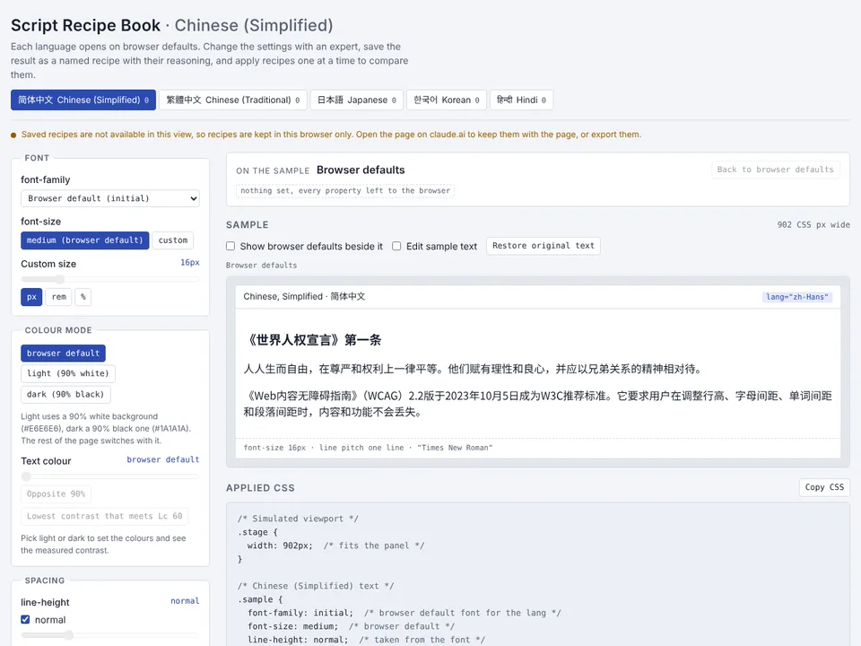
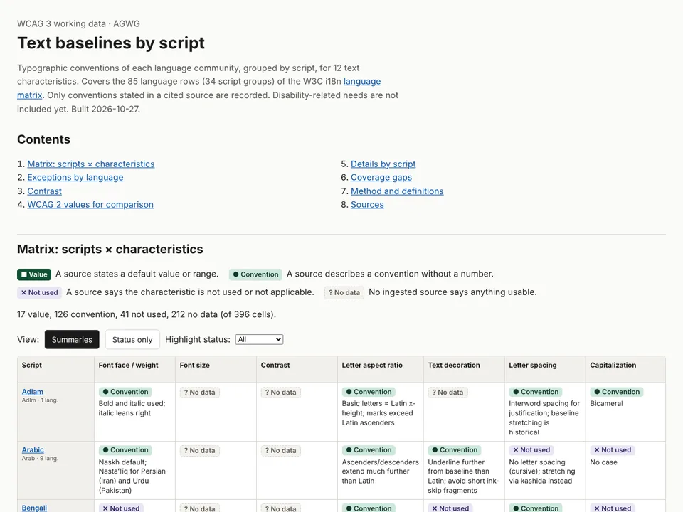

Script Recipe Book
Start each language on browser defaults, adjust font, spacing, colour and line breaking with an expert, then save and compare the results as named recipes.

Working tools and data built while drafting W3C accessibility and internationalization guidance. These are drafts, not W3C publications.
The experiments
Start each language on browser defaults, adjust font, spacing, colour and line breaking with an expert, then save and compare the results as named recipes.

Sourced typographic conventions for 12 text characteristics across the scripts in the W3C i18n language matrix, shown as a matrix with details by script.

Snapshots show each page as it opens.